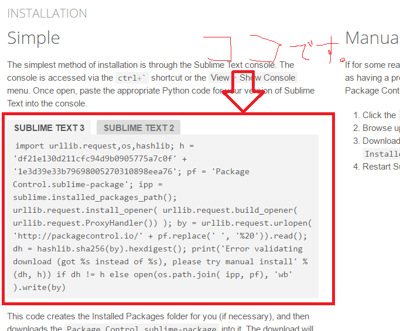
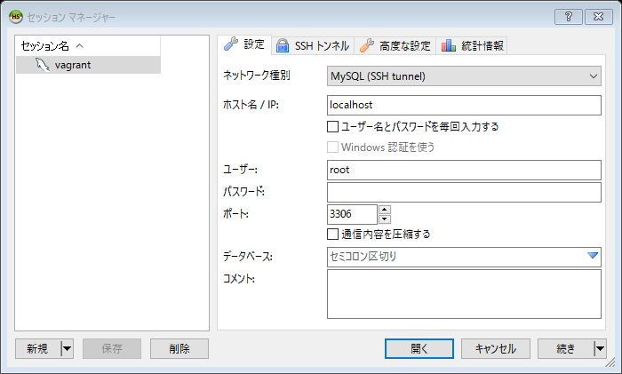
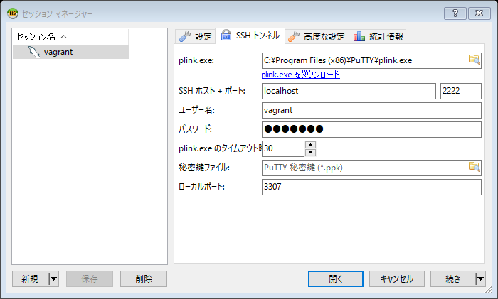
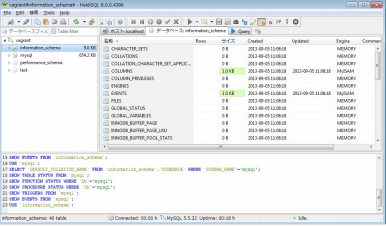

第0回 Ruby on Rails講習
この回ではRuby on Railsで開発していくうえで必要な環境構築をしていきます。
本講習ではSublime Text 3 というエディタを使います。
以下のリンクに飛んでください。
Sublime Text 3
この中から対応する環境のものをportable versionではない普通のリンクからダウンロードしてください。またインストールの設定はすべてデフォルトで大丈夫です。
インストールしたらSublime Textを起動してください。
それではこれからHtml, css, javascript, rubyの文書をきれいに整形するための基本設定をしていきます。(この基本設定はなるべく家でやってください。 プロキシの設定が面倒なので・・・)
(1) Sublime textのメニューバーから「Preferences」->「Settings - User」の順に選択
(2)開いたファイルに以下のコードを張り付けして保存(保存はCtrl-Sでできます。)
{
"draw_white_space":"all",
"font_size":8.0,
"highlight_line":true,
"ignored_packages":["Vintage"],
"rulers":[80, 120],
"tab_size":2,
"translate_tabs_to_spaces":true,
"trim_trailing_white_space_on_save":false,
"word_wrap":true,
"highlight_modified_tabs":true,
"scroll_past_end":true
}
(3)次にパッケージをダウンロードします。「View」->「Show console」の順に選択後、下に入力バーが表示されるのでそこにリンク先のコードをコピペしてEnter.
コードのリンク先
(4)いったんSublime Textを終了し再び起動。 そのあと画面で「Ctrl + Shift + p」を押す。上から入力バーが出てくるのでそこに「install package」と入力。
(5) パッケージ一覧が出てくるので以下のパッケージをインストール(最初はこれくらいでいいと思います。 もし調べてみて他に入れたいパッケージが出てきたら自分で入れてみてください。)
- Emmet ・・・HTML, CSSの文書をきれいにしてくれる
- TrailingSpaces ・・・ いらない空白文字を赤色で教えてくれる
TrailingSpacesはこのままだと全角スペースは判定してくれないのでそれを設定しましょう。
(8)「Preferences」->「Package Settings」->「Trailing Spaces」->「Settings-user」を選択、その後以下のコードを打ち込む。
{
"trailing_spaces_regexp":"| [\t]+"
}
これでSublime Textの基本設定は終了です。
次にほかの様々なソフトウェアをインストールしていきましょう。 基本的には上から順にインストールしていってください。
・Virtual Box
PC上に仮想環境を構築するためのソフトウェアです。ダウンロード、インストールにそれなりの時間がかかるので前日の夜ではなく早めにやっておきましょう。Virtual Box
インストールの設定はすべてデフォルトで問題ありません。
・vagrant
そもそもVirtual Boxで作られた仮想環境とPC内のシステムは互いに独立しているのでVirtual Boxだけだと仮想環境とPCでのファイルの行き来ができません。
そのやりとりをssh通信でやるのですがその設定をするのが大変なのでvagrantというソフト(Rubyで作られています。)を使います。 Virtual Boxをインストールしてからこちらをインストールするようにしてください。
vagrant
インストールの設定はすべてデフォルトで問題ありません。
・Git for Windows
こちらはWindowsOSの方のみインストールしてください。 コマンドプロンプトだとssh, gitが使えずかなり心もとないのでインストールします。
Git bash
インストールのオプションはすべてデフォルトで問題ありません。 もちろん好きな設定にするのは自由です。
それではインストールしたGit Bash(Macの方はTerminal)を使ってvagrant, VirtualBoxによる仮想環境を立ち上げていきましょう。
VagrantはコンソールからOSのイメージをダウンロードすることもできるのですが そのOSにRuby, rails, MySQL, Apache等々入れなければいけないので私があらかじめ入れておいてpackage化したものを皆さんに使ってもらいます。(一から構築するのも勉強になります。 が時間があるときにやってください。)
今回はCentOS6.5を使うのですがこれにした理由としてはまずCentOS7.xから大きく仕様が変わったこと、CentOS6.xの方がまだまだ資料が多いことから選びました。 気に入らない人は自分でCentOS7.x, Ubuntuなどをダウンロードして初めから設定してもらってもかまいません。
まず以下のリンクからpackage.boxとVagrantfileをダウンロードしてください。
package.box
Vagrantfile
Vagrantfileに拡張子.txtがついている場合がありますのでその時は拡張子を消してください。
続いてGitBashを立ち上げましょう。
立ち上げたらホームディレクトリに「vagrant」というディレクトリを、そしてその中に進んでからさらに「centos6_5」というディレクトリを作りましょう。(ディレクトリ名はなんでもいいですがわかりやすい名前にした方がいいです)mkdir vagrant cd vagrant mkdir centos6_5
そして「centos6_5」の中に先ほどダウンロードした二つのファイルをドラッグアンドドロップで入れてください。
centos6_5はWindowsの場合 C:\Users\あなたのユーザー名\vagrant\centos6_5 です。
それが終わったら「centos6_5」の中で以下のコマンドを打ち込みましょう。
vagrant box add CentOS6.5 ./package.box
このコマンドの「CentOS6.5」という部分はbox名というものなのですがこれは変えないでください。
実はVagrantfile内部で「CentOS6.5」という名前で設定しているので変えると起動しなくなります。(まあVagrantfileの内容を変えれば済む話ですが)
次に仮想環境を立ち上げましょう。以下のコマンドを打ち込んでください。
vagrant up
立ち上がりが終わった後仮想環境内にsshで入ります。
vagrant ssh
入ったら
cd /vagrant
と打ってください。このファイルがみなさんのOSの~/vagrant/centos6_5との共有ディレクトリになっています。
/vagrant内部でlsを打つとおそらく「package.box」「Vagrantfile」の二つがあると思います。 ここまで何もなく来れたら成功です。
そして仮想環境から抜けたいときはコンソールに
exit
と打ち込みましょう。GitBashを起動したときに戻っているはずです。
また、以下のコマンドは覚えておきましょう。
- 仮想環境を一時停止したい場合は(作業を一時中断したい時などに有効)
vagrant suspend
vagrant halt
vagrant reload
となります。 立ち上げる時は「vagrant up」です。これらのコマンドは覚えておきましょう。
Heidi SQL
私たちはこれからRelational DataBase Management System, 略してRDBMSの一つであるMySQL(*1)というものを扱っていくのですがRDBMSだけだとデータの一覧を見たりデータを挿入するのにコマンドを打たなければなりません。そこでデータベースの閲覧等がGUIでできるHeidiSQLを使います。(ただしCUIのコマンドも少しは紹介します。 いずれはCUIでもできるようにしましょう。)
HeidiSQL※インストールの設定はすべてデフォルトで問題ありません。
それではHeidiSQLの設定をしていきましょう、まず「vagrant up」で立ち上げてください。
そしてHeidiSQLを起動、その後左下にある新規というボタンをクリック。
上と同じように設定してください。
また「SSHトンネル」のタブで上と同じように設定しましょう。また「plink.exe」はその下にあるリンク先より探してダウンロードしてください。
ここまで設定出来たら右下の「開く」ボタンを押してみてください。
上の画像のような画面が出てきたら成功です。
以上で環境構築は終了です。 なにかわからないこと等あれば大岡や2年生、web系言語に詳しい1年生に聞いてみてください。